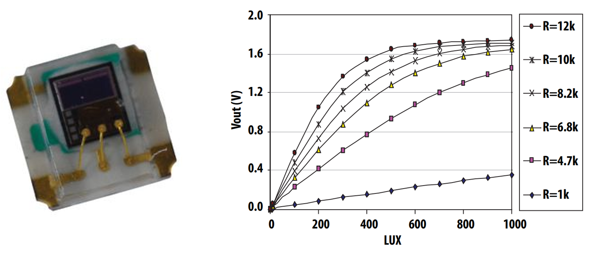
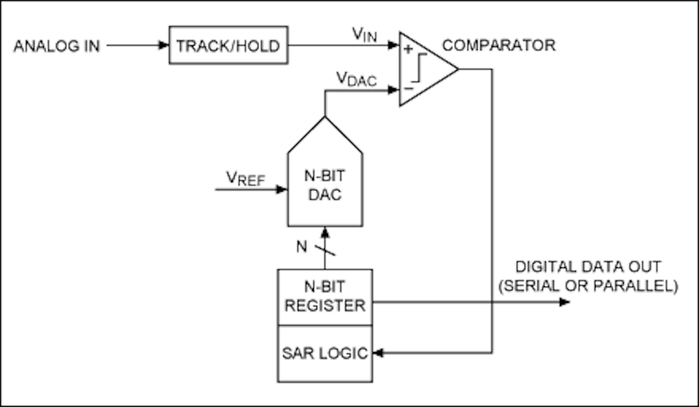
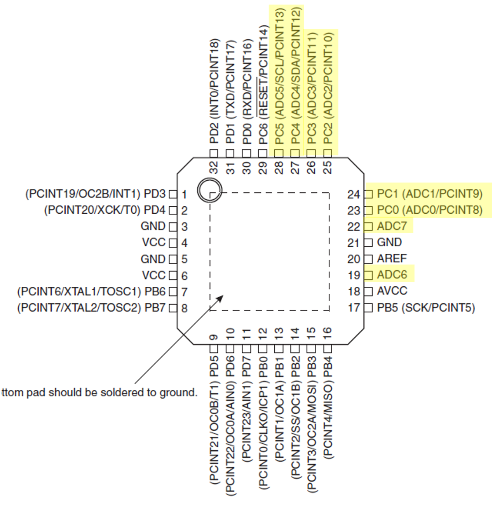
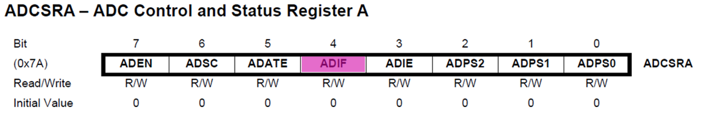
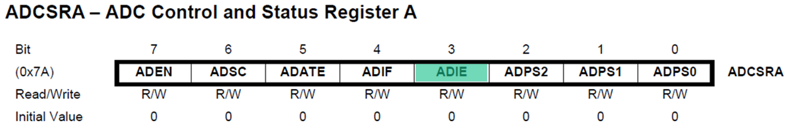
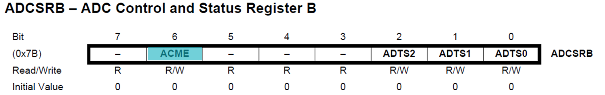

C is a high-level structured programming language which is often used for writing microcontroller applications. This lecture looks at how I/O operations are performed on analogue inputs.
In this lecture we will be looking at how we can read analogue signals into a microcontroller using an analogue to digital converter (ADC).
We begin by introducing analogue signals and the fundamental principals of an ADC.
We move on to look at the ADC contained on the Atmel ATmega328 microcontroller, focussing on the key registers and how to use them.
We conclude with an example program for the Atmel ATmega328 microcontroller which reads the voltage from a potentiometer and turns on some LEDs based on the voltage.
What are analogue signals?
Analogue signals
Analogue signals are those that are both continuous in time and continuous in amplitude i.e. they are continuous signals.
In the real world, most measurable parameters are actually analogue. They include such signals as temperature, humidity, light, sound, etc.
An analogue sensor
An analogue sensor for measuring light intensity is shown in Figure 1 along with a calibration graph that would be typically supplied in the data sheet for such a sensor.

Figure 1: A photograph of a light sensor and its calibration data
Sampling and quantization
Since microcontrollers can only handle 0s and 1s (digital signals) we need a way of converting analogue signals to digital signals. This is done using an analogue-to-digital converter or ADC.
An ADC converts a continuous-time and continuous-amplitude analogue signal to a discrete-time and discrete-amplitude digital signal through the process called sampling and quantization illustrated in Figure 2.
Sampling and quantization of an analogue signal
Figure 2: Sampling and quantization of an analogue signal
ADC Principles
An analogue signal is continuous in time and amplitude and to convert it to a digital signal it is necessary to periodically sample the analogue signal. The rate at which the signal is sampled is referred to as the sampling rate.
Each time the signal is sampled the analogue value must be represented in one of several discrete bins (digital values). The number of discrete bins available is called the resolution.
Both the sampling rate and the conversion resolution need to be sufficiently high to create an accurate digital reconstruction of the analogue signal.
ADC Sampling Rate
The Nyquist–Shannon sampling theorem implies that to get an accurate reproduction of the original signal, the sampling rate must be higher than twice the highest frequency of the signal. Lower than this and the reproduced signal will be distorted, and data lost.
Example
Consider the sine wave governed by the equation \(x(t) = sin(t)\). The period is \(2\pi\) (approx. 6.3 seconds) so the frequency is 0.16 Hz (Figure 3).
Figure 3: Analogue signal \(x(t) = \sin(t)\) - a sine wave.
Sampled sine wave
If we sample this at 0.5 Hz (once every 2 seconds), which is over 3 times the original frequency, we get the orange trace Figure 4. From this it would be enough to accurately recreate the blue trace.
Figure 4: Sine wave \(x(t) = \sin(t)\) sampled at 0.5 Hz.
ADC Resolution
As well as the sampling rate, the resolution of the converter is crucial to getting an accurate representation of the input signal. The resolution indicates the number of discrete values that can be used over the total range of analogue values.
A 2-bit ADC
As an example a 2-bit ADC has \(2^2 = 4\) quantization levels (Figure 5).
Figure 5: Illustration of the resolution of a 2 bit ADC
A 3-bit ADC has \(2^3 = 8\) quantization levels (Figure 6).
Figure 6: Illustration of the resolution of a 3 bit ADC
Resolution of a 3-bit ADC
To calculate the resolution of an ADC we use Equation 11.
The architecture of the Atmel ATmega328 is shown in Figure 12. It contains the following major components:
Multiplexer1
Voltage Reference
Digital to Analogue Converter (DAC)
Sample and Hold Circuit
Control and Result Registers
Architectures
There are several achitectures for ADCs summarized as:
Sigma-Delta (\(\Sigma-\Delta\))
Successive Approximation Register (SAR)
Pipelined
Flash
Each has their own advantages and disadvantages in terms of price, conversion speed, noise and complexity as summarized in Figure 13.
ADC Architecture vs Resolution and Sample Rate
Figure 13: ADC Architecture vs Resolution and Sample Rate (Source calstate.edu)
Most general-purpose microcontrollers contain SAR-based architecture ADCs.
SAR based ADC Architecture
Figure 14: Schematic diagram of the Atmel ATMega328 ADC system with the SAR highlighted.
SAR based ADC Operation

Figure 15: Schematic diagram of the hardware used to achieve SAR conversion (image source: Analog Devices1).
SAR operation
The analogue input signal is held by a track/hold circuit and fed as \(V_\mathrm{IN}\) into a comparator.
To implement the binary search algorithm, the \(N\)-bit register is first set to mid-scale (that is the MSB is set to 1 and all other bits set to 0) so that the voltage at \(V_\mathrm{DAC} = V_\mathrm{REF}/2\).
A comparison is then performed to determine if \(V_\mathrm{IN} \le V_\mathrm{DAC}\).
If \(V_\mathrm{IN} > V_\mathrm{DAC}\), the comparator output will be logic high (or 1), and the MSB of the \(N\)-bit register remains at 1.
If \(V_\mathrm{IN} < V_\mathrm{DAC}\), the comparator output is a logic low (0) and the MSB of the \(N\)-register is cleared to logic 0.
The SAR control logic then moves to the next bit along1, forces that bit high, and repeats the comparison. The sequence continues all the way down to the LSB (bit 0).
Once the input has been compared with the full \(N\)-bit register the conversion is complete and the \(N\)-bit digital word is sent to the ADC output register.
4-bit SAR based ADC Example
Figure 16: Example of the successive approximation method in action: a 4 bit ADC converting a signal for which \(V_\mathrm{IN}\) is in “bin” 5.
The Atmel ATmega328 Analog-digital-converter
The Atmel ATMega328 ADC
The Atmel ATMega328 features a 10-bit successive approximation ADC.
The ADC is connected to an 8-channel Analog Multiplexer which allows eight single-ended voltage inputs (referenced to GND) constructed from the pins of Port C.
Technical specifications
The ADC provides:
10-bit Resolution
13 - 260μs Conversion Time
Up to 76.9kSPS1 (Up to 15kSPS at Maximum Resolution)
9 Multiplexed Single Ended Input Channels
Hardware registers used
ADMUX - ADC Multiplexer Selection Register.
ADCSRA - ADC Status and Control Register A.
ADCSRB - ADC Status and Control Register B.
ADCL and ADCH - The ADC Output Registers.
DIDR0 - Digital Input Disable Register 0.
These registers are described in the following sections.
ADMUX – ADC Multiplexer Selection
The ADMUX is an 8-bit register arranged as shown in Figure 17.
Bits 7 and 6—REFS1 and REFS0—select the reference voltage for the ADC1.
Bit 5 – ADLAR: ADC Left Adjust Result
ADLAR bit (bit 5) affects the presentation of the ADC conversion result in the ADC Data Register.
We write 1 to ADLAR to left adjust the result.
Otherwise, the result is right adjusted.
Bits 3:0 – MUX[3:0]: Analog Channel Selection Bits
The value of these bits selects which analogue inputs are connected to the ADC (see Figure 18 and Table 2).

Figure 18: The pins on the Atmel ATmega328 that may be multiplexed to act as ADC inputs
Table 2: ADC multiplexer bit settings for the ADMUX register
MUX3:0
Input Selected
\(0000\)
ADC0
\(0001\)
ADC1
\(0010\)
ADC2
\(0011\)
ADC3
\(0100\)
ADC4
\(0101\)
ADC5
\(0110\)
ADC6 - Not used on the Arduino nano board
\(0111\)
ADC7 - Not used on the Arduino nano board
\(1000\)
ADC8 - Used for internal temperature sensor.
\(1001\)
Reserved
\(1010\)
Reserved
\(1011\)
Reserved
\(1100\)
Reserved
\(1101\)
Reserved
\(1110\)
1.1V (\(V_\mathrm{BG}\))
\(1111\)
GND
ADCSRA - ADC Control and Status Register A
Bit 7 - ADEN: ADC Enable
Writing 1 to bit 7 of the ADCSRA register enables the ADC. Writing 0 to this bit turns the ADC off.
Bit 6 - ADSC: ADC Start Conversion
In Single Conversion Mode, writing 1 to bit 6 of the ADCSRA register starts the conversion.
In Free Running Mode, writing 1 to this bit starts the first conversion.
Bit 5 - ADATE: ADC Start Conversion
When 1 is written to bit 5 of the ADCSRA register, the ADC will start a conversion on a positive edge of the selected trigger signal1
Bit 4 - ADIF: ADC Interrupt Flag

This bit is set when an ADC conversion completes, and the data registers are updated. The ADC Conversion Complete Interrupt is executed if the ADIE bit and the I-bit in the status register are set.
Bit 3 - ADIE: ADC Interrupt Enable

Writing 1 to bit30 of the ADCSRA register, when the I-bit in the status register is set, activates the ADC Conversion Complete Interrupt
Bits 2-0 - ADPS[2:0]: ADC Interrupt Enable
Bits 2-0 of ADCSRA determine the division factor between the system clock frequency and the input clock to the ADC. That is they set the sample rate for free-running mode. The prescaler settings are tabulated in Table 3.
Bit 6 - ACME: Analogue comparator multiplexer enable

When logic 1 is written to bit 6 of ADCSRB the ADC is switched off, the ADC multiplexer selects the negative input to the Analog Comparator. When 0 is written to this bit, AIN1 is applied to the negative input of the Analog Comparator.
Bits 2:0 - ADT[2:0]: ADC Autotrigger source
If logic 1 is written to the ADATE bit in the ADCSRA register, the value of the ADTS bits selects which source will trigger an ADC conversion. The trigger source settings are tabulated in Table 4.
Table 4: ADC Trigger Source.
ADTS2
ADTS1
ADTS0
Trigger Source
0
0
0
Free Running Mode
0
0
1
Analogue Comparitor
0
1
0
External Interrupt Request 0
0
1
1
Timer/Counter 0 Compare Match A
1
0
0
Timer/Counter 0 Overflow
1
0
1
Timer/Counter 0 Compare Match B
1
1
0
Timer/Counter 1 Overflow
1
1
1
Timer/Counter 1 Capture Event
ADCL and ADCH - The ADC Data Registers
The ADC Data Registers are illustrated in Figure 19.
Figure 19: The ADC Data Registers ADCH and ADCL when (a) ADLAR = 0 and (b) when ADLAR = 1.
When an ADC conversion is complete, the result is put in these two registers1.
When ADCL is read, the ADC Data Register is not updated until ADCH is read.
If the result is left adjusted and no more than 8-bit precision is required, it is sufficient to read ADCH. Otherwise, ADCL must be read first, then ADCH.
DIDR0 - Digital Input Disable Register 0
Bits 5:0 - ADC5D…ADC0D: ADC5…0 Digital Input Disable
When logic 1 is written to one of these bits, the digital input buffer on the corresponding ADC pin is disabled. (i.e. the corresponding PIN register bit will always read zero).
When an analog signal is applied to the ADC5…0 pin and the digital input from this pin is not needed, logic 1 should be written to this bit to reduce power consumption in the digital input buffer.
Setting up the ADC
Figure 20: A flow chart of the ADC initialization steps
Figure 21: A flow chart of the ADC operation loop
Analogue I/O Example program
Single Conversion Example
Figure 22: The prototype board showing the finished Arduino nano application with ADC and digital outputs.
The centre tap of the blue potentiometer shown in Figure 22 is connected to the analogue input A0 which represents Port C Bit 0 on the ATmega328 microcontroller.
As the voltage at the input changes, the value is reflected on the 6 LEDs.
What does the code for this look like without using the predefined Arduino function – analogRead?
Example code - aligning port names to the I/O memory map
We showed how we use the #define function to map our program variables to the I/O memory map shown in Example code - aligning port names to the I/O memory map. We use the same technique to map the digital and analogue registers to programmer friendly names:
//I/O and ADC Register definitions taken from datasheet#define PORTB (*(volatileuint8_t*)(0x25))#define DDRB (*(volatileuint8_t*)(0x24))#define PINB (*(volatileuint8_t*)(0x23))#define ADMUX (*(volatileuint8_t*)(0x7C))#define ADCSRA (*(volatileuint8_t*)(0x7A))#define ADCRSB (*(volatileuint8_t*)(0x7B))#define ADCH (*(volatileuint8_t*)(0x79))#define ADCL (*(volatileuint8_t*)(0x78))#define DIDR0 (*(volatileuint8_t*)(0x7E))
We now define some unsigned integers as either 8 or 16 bits:
Variable type: uint16_t
first variable name: adc_result
High and low byte of adc_result: adc_result_high, adc_result_low
// Set Data Direction RegistersDDRB = DDRB |0b00111111;// Setup bits 0 - 5 of port B as outputs// Turn all LEDs offPORTB = PORTB &0b11000000;// Pins B0 (D8) - B5 (D13) start low// Set up ADC on pin A0DIDR0 = DIDR0 |0b00000001;//Disable pin A0 as a digital inputADMUX =0b01000000;// Select reference voltage, right adjusted result and select channel ADC0 - A0ADCSRA = ADCSRA |0b00000111;// Select ADC PrescalerADCSRA = ADCSRA |0b10000000;// Enable ADC
Example - the processing loop
for(;;){ ADCSRA = ADCSRA |0b01000000;//start conversion by writing 1 to the ADSC bitwhile((ADCSRA &0b01000000)!=0){}//wait until the ADSC bit changes to 0 adc_result_low = ADCL;//read the low byte of the result into adc_result_low adc_result_high = ADCH;//read the high byte of the result into adc_result_high/* shift whole 8 bits of ADC high byte into most significant byte of ADC result and add in ADC low byte using bitwise OR. */ adc_result =(adc_result_high<<8)| adc_result_low;// do somethinhg interesting with the ADC readings}
Example - the full program
The full program is available as a GitHub gist: main.c. You will need a fully featured IDE, such as Microchip Studio, to compile and upload the code to the Ardino nano board.
Simulation of the full program
Wokwi is an online Electronics simulator. You can use it to simulate Arduino, ESP32, STM32, and many other popular boards, parts and sensors. – Welcome to Wokwi!
My 2024-2025 EG-353 Individual Engineering Project student, Yousef Alsayegh, has created Wokwi simulations of Ben Clifford’s demonstration programs. Here is the simulation of this week’s simulation Week 6: Interfacing to analogue I/O with C. You can run the simulation and play with the code.
Summary
In this section we have:
Discussed the differences between analogue and digital signals and the challenges in working with them.
Explored analogue to digital conversion looking at the architectures and focusing on SAR based ADCs.
Continued looking at I/O operations on the Atmel ATmega328 microcontroller focusing on analogue signals and using the ADC registers.
On Canvas
This week on the canvas course pages, you will find the sample program from today’s lecture, look through this and ensure you are confident in how it works and how the registers are set for analogue inputs and how masks are used for the digital outputs to the LEDS.
There is also a short quiz to test your knowledge on these topics.
Any Questions?
Please use the Course Question Board on Canvas or take advantage of the lecturers’ office hours.